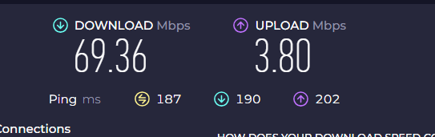

Добрый день! Долгое время использовал reality на дешманском VPS во Франции, около года всё работало нормально (хотя и с редкими странностями), но в последнее время начались такие проблемы:
- Пинг до сервера вроде как обычно (~56 ms), скорость по speedtest тоже, крупные файлы тянет с нормальной скоростью.
- При этом сайты загружаются ненормально. Картинки, автары, превьюшки на youtube - либо дико долго, либо частично не догружаются совсем. Видео на youtube очень странно работают: рекламные ролики тормозят, видео поначалу тормозит, а потом вдруг как по маслу в том же качестве. Загрузка страниц иногда подтупливает. Напрямую без прокси все сайты работают нормально (ну, те что не заблокированы).
- Иногда как будто бы помогает реконнект в клиенте, но ненадолго. То есть сёрфинг начинает тупить, переподключаюсь - вроде становится бодрее, но через пару минут опять стухает, при этом на результаты speedtest и загрузку файлов не влияет, всё как будто бы окей.
- Продолжается это всё уже пару недель. Провайдер домру (эр-телеком) Нижний Новгород.
Сразу скажу, что я ламер и слабо понимаю, что делаю. Настраивал вот по этому конфигу с хабра. Также на VPS отключен ipv6 через /etc/sysctl.conf
(net.ipv6.conf.all.disable_ipv6 = 1), хотя в принципе хостер в любом случае только ipv4 выдаёт по умолчанию. На всякий случай конфиг:
{
"log": {
"loglevel": "info"
},
"routing": {
"rules": [],
"domainStrategy": "AsIs"
},
"inbounds": [
{
"port": 443,
"protocol": "vless",
"tag": "vless_tls",
"settings": {
"clients": [
{
"id": "21780f95-a438-4847-b547-9821c4029948",
"email": "user1@myserver",
"flow": "xtls-rprx-vision"
}
],
"decryption": "none"
},
"streamSettings": {
"network": "tcp",
"security": "reality",
"realitySettings": {
"show": false,
"dest": "vimeo.com:443",
"xver": 0,
"serverNames": [
"vimeo.com"
],
"privateKey": "mBuTlDwoM-hC0EUEA2ybbZCY6UoGFmBEAGsTJcp5h1E",
"minClientVer": "",
"maxClientVer": "",
"maxTimeDiff": 0,
"shortIds": [
"e6b7fbf2e80b6a97"
]
}
},
"sniffing": {
"enabled": true,
"destOverride": [
"http",
"tls"
]
}
}
],
"outbounds": [
{
"protocol": "freedom",
"tag": "direct"
},
{
"protocol": "blackhole",
"tag": "block"
}
]
}
Подключаюсь через hiddify 1.4.0, в ссылке для подключения помимо ключей, маскировочного домена и IP прописано следующее:
security=reality
alpn=h2
fp=chrome
type=tcp
flow=xtls-rprx-vision
encryption=none
В настройках hiddify прописал следующее (видел схожий конфиг на хабре для nekoray, если что сильно не пинайте):
Resolve Destination = true
IPv6 Route = Disabled
Remote DNS: https://8.8.8.8/dns-query
Remote DNS Domain Strategy: ipv4_only
Direct DNS: 8.8.8.8
Direct DNS Domain Strategy: ipv4_only
Enable DNS Routing = true
Service Mode = Proxy Service Only
Strict Route = true
Браузер Firefox, подключаюсь на порт прокси через FoxyProxy. В домашнем роутере DNS-серверы от провайдера, если это имеет какое-то значение.
Что пробовал делать:
- Развернуть систему на VPS с нуля и настроить всё заново
- Менять маскировочные домены
Разницы не увидел.
Обращаюсь к сообществу — пожалуйста, посмотрите, всё ли нормально в конфигурации, и если нет, то что можно поправить? Лично у меня пока предположения такие:
- Я что-то делаю не так. Немного странно, потому что месяцами конфиг работал нормально.
- Что-то не в порядке на стороне хостера.
- Что-то не в порядке у Эр-Телеком с проходом трафика в направлении моего VPS. Если честно, такое уже бывало, с 2018 года пару раз менял VPS по причине “в часы пик пинг улетает в космос”. Сейчас вроде не улетает, но трассировка странная, на стыке между Москвой и Франкфуртом регулярно звёздочки вместо времени. С другой стороны не понимаю, почему скорость скачивания не проседает при этом.
- Что-то ещё. Совершенно не умею диагностировать подобные случаи, в этом случае нужны советы, куда копать. Как минимум, логично было бы протестировать соединение с заведомо нормальным сервером — буду благодарен, если кто-то подскажет, где взять бесплатный прокси для таких целей.
ходят слухи что вместе с youtube стали “резать” VPNы всякие разные
Вчера с утра в России массово жалуются на блокировку VPN-протоколов Outline/Shadowsocks.
Вместе с носками отвалились прокси телеги. Верный признак того, что сигнатурами пытаются SS и VLESS глушить.
Думал об этом, но вроде не особо похоже, проблема какая-то очень плавающая и нестабильны параметры замедления. Строго говоря, главное подозрение у меня на чисто технический затык со стороны домру (или Retnet, через который идёт трафик), потому что во-первых такое уже было, а во-вторых как будто бы проблема всё-таки наслаивается на пиковые часы. Я сначала не придал значения, потому что в районе 10 - 11 утра тоже подтупливает (вроде утром нелогично), но сейчас посмотрел инфу на transparencyreport.google.com — там как раз в районе 11 утра первый пик по трафику на многих сервисах, а второй вечером. В принципе сходится. Сейчас вот вроде вполне нормально всё работает. UPD: да хотя нет, всё равно превью на youtube не грузятся толком.
Либо проблемы со стороны провайдера VPS, тоже вполне вариант.
Но всё же мало ли, решил поинтересоваться, может и я что-то не так делаю. Или может как-то продеагностировать можно поточнее, я к сожалению совсем в этом не понимаю.
там немного про другое
так же помню кто то жаловался на потери пакетов при определенных протоколах/направлениях.
Используйте uBlock. Одной проблемой будет меньше 
Спасибо, там понятная инструкция. Проблема в том, что конкретно сейчас всё работает до безобразия нормально (что снова наводит на мысль о затыке в пиковые часы), и в wireshark ничего подозрительного не видно. Попробую сделать захват в тот момент, когда будет работать плохо.
 решает только одну из проблем, но спасибо. Но в целом реклама меня не так волнует, как рваная загрузка изображений на всех сайтах.
решает только одну из проблем, но спасибо. Но в целом реклама меня не так волнует, как рваная загрузка изображений на всех сайтах.
В пиковые часы сделайте пинг до 1.1.1.1 на впс, возможно провайдер не следит и сеть перегружена
А кроме Ютюба какие сайты тормозят?
В браузере включите DoH или DoQ.
Вот этим сканером найдите сайт в сети своего VPS хостера и впишите его как подменный домен GitHub - XTLS/RealiTLScanner: A TLS server scanner for Reality
Vimeo тоже могут троттлить за компанию с ютубом.
Сразу скажу, что дело видимо раскрыто, но вопрос у меня остался.
Вечером снова начались тормоза, запустил wireshark. Вижу очень много вот такого при загрузке любого сайта через прокси:
{kind=link}
А потом я зашёл на speedtest, и тут до меня дошло. По умолчанию он тестирует скорость в режиме Multi — разумеется, при таком раскладе он показывает нормальную скорость (вероятно, это же объясняет, почему Firefox с quic плохо загружает превью и рекламу на youtube, но без проблем грузит видео в высоком качестве). Начал проверять в режиме Single, и резко стало понятнее. Что сделал по итогу:
- Отключил прокси, остался на голом подключении ДомРу.
- Начал тестировать скорость до узлов в Страсбурге (там мой VPS) и окрестностях, в режиме Single. Везде download проваливается драматически, до 300 - 800 kbps, даже Париж в эту категорию попадает.
- Другие направления вроде Франкфурта и Амстердама работают нормально.
Из вышеизложенного понимаю так, что проблема на стороне ДомРу. С этим вообще можно что-то пытаться сделать?
UPD: у знакомого на Ростелекоме похожая ерунда кстати с парижским сервером, download 4 mbps, upload 36 mbps. Олимпиада?
Какой сервер в спидтесте? Почему не сделали пинг на самой впс чтобы исключить проблемы на ней?
В апдейте говорю про Paris - Virtual Technologies and Solutions. Но лично у меня откровенно плохо работает почти всё подряд. Все серверы в Karlsruhe еле шевелятся на download, Strasbourg весь кроме ORANGE (почему-то). За последний час стало заметно лучше, с 800 kbps в среднем подросло до 2 - 2,5 Mbps, и сразу прокси заметно живее заработал.
Делал пинг на самой VPS до 1.1.1.1, средний 3,7 ms как и был днём, поэтому не стал упоминать.
bbr на сервере включен?
https://github.com/White-Tiger/WinMTR/releases/download/v1.0/WinMTR-v100.zip
В пиковый час можете сделать трассировку до сервера, 10 минут минимум
Хороший вопрос! Нет, был отключен, включил.
Хорошо, попробую.
вчера было что то странное вечером даже на RosTelecom
например дикие тормоза acestream://
может на самом деле начали не только ютуб резать скорость а вообще все что не попадает под “белые списки” при трафике на определенные AS/CIDR
Насчёт пиковости часа не уверен, но вообще ситуация следующая:
Дальше сделал вот что. Посмотрел список узлов в looking glass PQ.Hosting и нашел парочку, к которым трассировка по РФ идёт тем же маршрутом (конечная точка 139.45.241.200). Бегло протестировал.
Вот Франкфурт. Картина схожая.

А вот Меппел (Нидерланды). Здесь проблемы нет.
Не знаю, что сказать 
на 1 скрине видно реальные потери только на самой впс, что может говорить о проблемах с сетью у хостера, пришлите ip в лс если тут не хотите писать.
на ip от pq никогда не тестируйте, у них ужасная сеть, вы не получите реальных результатов и только запутаетесь, покупать впс у них не рекомендую никому и никогда
IP отправил. Не могли бы чуть подробнее объяснить, что значит реальные потери при трассировке и чем они отличаются от нереальных? 
потери нужно смотреть снизу вверх. у вас на скрине видно потери уже на роутере, затем в сети провайдера потери “магически восстанавливаются”, чего не может быть. на последних 6 хопах (исключая самый последний) потерь нет, значит их небыло и до них, они появились только на самом последнем хопе
Ну да, вы правы, звучит логично  Вообще кстати давно хотел спросить: тогда получается, что “пропадающие” пакеты в середине маршрута — это потому что хост режектит часть ICMP запросов, но в реальности работает нормально? Или какая-то другая причина?
Вообще кстати давно хотел спросить: тогда получается, что “пропадающие” пакеты в середине маршрута — это потому что хост режектит часть ICMP запросов, но в реальности работает нормально? Или какая-то другая причина?
этого я не знаю. и еще одна проблема icmp трассировки в том, что маршрутов на самом деле может быть несколько, но в трассе будет видно только один. остальные маршруты можно увидеть через tcp/udp трассировку, но нормальных инструментов для этого я еще не видел, линуксовый mtr умеет, но очень плохо
и еще вспомнил что на некоторых хостингах icmp пакеты не доходят до сервера из-за anti-ddos, такое есть на aeza, там ответы приходят даже если сервер выключен, в таком случае трассу надо делать от самой vps а не к ней
Благодаря @0ka удалось выяснить, что проблема всё-таки в плохой работе самого VPS (RackNerd если кому интересно, всё-таки дёшево и хорошо если и бывает, то недолго  ). Благодарю за помощь, будем искать что-то получше.
). Благодарю за помощь, будем искать что-то получше.
вот этот - работает отлично https://cp.inferno.name/
Буду иметь в виду, спасибо.
1 гб озу и 20 гб ssd для vless reality хватит или нужен побольше?
Работает на серваке с 1 CPU Xeon, 512 Мб ОЗУ, 10 Гб SSD. В потолок железа не упирается, запас присутствует % 30
Speedtest
классно, не подскажите где vps брали?
и вы используете vless reality?

у меня такие цифры vps выдает хотя железо по сравнению с вашим у меня 1 cpu, 2гб озу и 30 гб ssd и 1 гбит интернет на ней, а такие плохие показатели выдает
На сервере стоит Xray-core, настроен vless reality
панелью 3x-ui не пользуетесь?
Нет, не вижу смысла мониторить)
Бросается в глаза огромный пинг, сервер где-то на западном побережье США? Ну либо вы с востока РФ куда-то далеко стучитесь. В любом случае, упирается не в ресурсы, а в сеть, он и на 512МБ с одним ядром нормально должен работать. Ищите сервер поближе к вашему местоположению, проверяйте пинг и скорость перед покупкой, у многих хостеров есть looking glass для этого.
С недавних пор со смартфона speedtest.net дает слабые результаты, а здесь Internet Speed Test | Check Broadband Speed | Google Fiber все в порядке. Странно, учитывая, что это один и тот же сервис, даже выбираю одинаковые сервера для проверки,